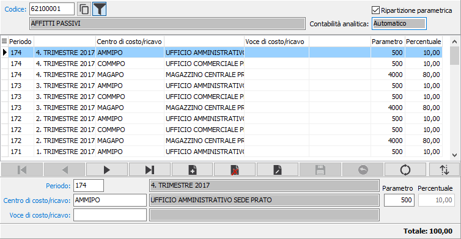
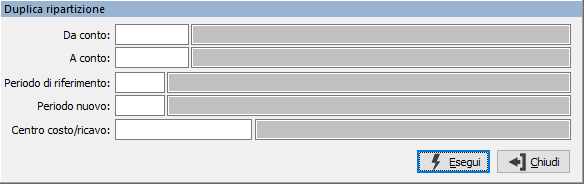

Il
pulsante, presente sul navigatore dei centri di costo, consente di ordinare
per codice centro di costo/ricavo le voci del singolo periodo selezionato,
oppure l'ordinamento di tutte le voci per ogni periodo presente.
Il
pulsante, presente sul navigatore dei centri di costo, consente di ordinare
per codice centro di costo/ricavo le voci del singolo periodo selezionato,
oppure l'ordinamento di tutte le voci per ogni periodo presente.Ripartizione conti
La procedura di ripartizione conti viene utilizzata per assegnare, ai sottoconti che interessano la gestione della contabilità analitica, i relativi centri di costo/ricavo e/o voci di costo/ricavo associandoli a specifici periodi di ripartizione.
La ripartizione dei sottoconti viene utilizzata sia in fase di movimentazione manuale, sia da prima nota contabile nella modalità espressa dal sottoconto stesso (manuale oppure automatica).

La ripartizione interessa esclusivamente i sottoconti che sono collegati, in modo manuale oppure automatico, alla contabilità analitica. Dopo aver specificato il sottoconto vengono visualizzati il tipo di collegamento con la contabilità analitica ed il tipo di ripartizione attuabile, parametrica o percentuale.
Si passa successivamente all'inserimento dei singoli periodi di ripartizione collegati con i centri di costo/ricavo ed eventualmente anche con singole voci di costo/ricavo. Su tutti i campi codice sono presenti le funzioni di ricerca (F9) ed accesso interattivo alla tabella collegata (CTRL+W).
In relazione al tipo di ripartizione viene richiesta la percentuale oppure il parametro; in quest'ultimo caso la percentuale viene calcolata automaticamente.
Il
pulsante, presente sul navigatore dei centri di costo, consente di ordinare
per codice centro di costo/ricavo le voci del singolo periodo selezionato,
oppure l'ordinamento di tutte le voci per ogni periodo presente.
Il pulsante Duplicazione consente di generare ripartizioni per nuovi periodi da altre già esistenti oppure nuove ripartizioni specificando il centro di costo/ricavo. Compare la finestra di selezione che consente di specificare i conti da selezionare, eventualmente il periodo da leggere ed il nuovo periodo, su cui copiare i dati. Se non si specifica il periodo di riferimento è possibile indicare il centro di costo/ricavo da assegnare al periodo di riferimento.
 Il pulsante Duplicazione
consente di generare ripartizioni per nuovi periodi da altre già esistenti
oppure nuove ripartizioni specificando il centro di costo/ricavo. Compare
la finestra di selezione che consente di specificare i conti da selezionare,
eventualmente il periodo da leggere ed il nuovo periodo, su cui copiare
i dati. Se non si specifica il periodo di riferimento è possibile indicare
il centro di costo/ricavo da assegnare al periodo di riferimento.
Il pulsante Duplicazione
consente di generare ripartizioni per nuovi periodi da altre già esistenti
oppure nuove ripartizioni specificando il centro di costo/ricavo. Compare
la finestra di selezione che consente di specificare i conti da selezionare,
eventualmente il periodo da leggere ed il nuovo periodo, su cui copiare
i dati. Se non si specifica il periodo di riferimento è possibile indicare
il centro di costo/ricavo da assegnare al periodo di riferimento.
